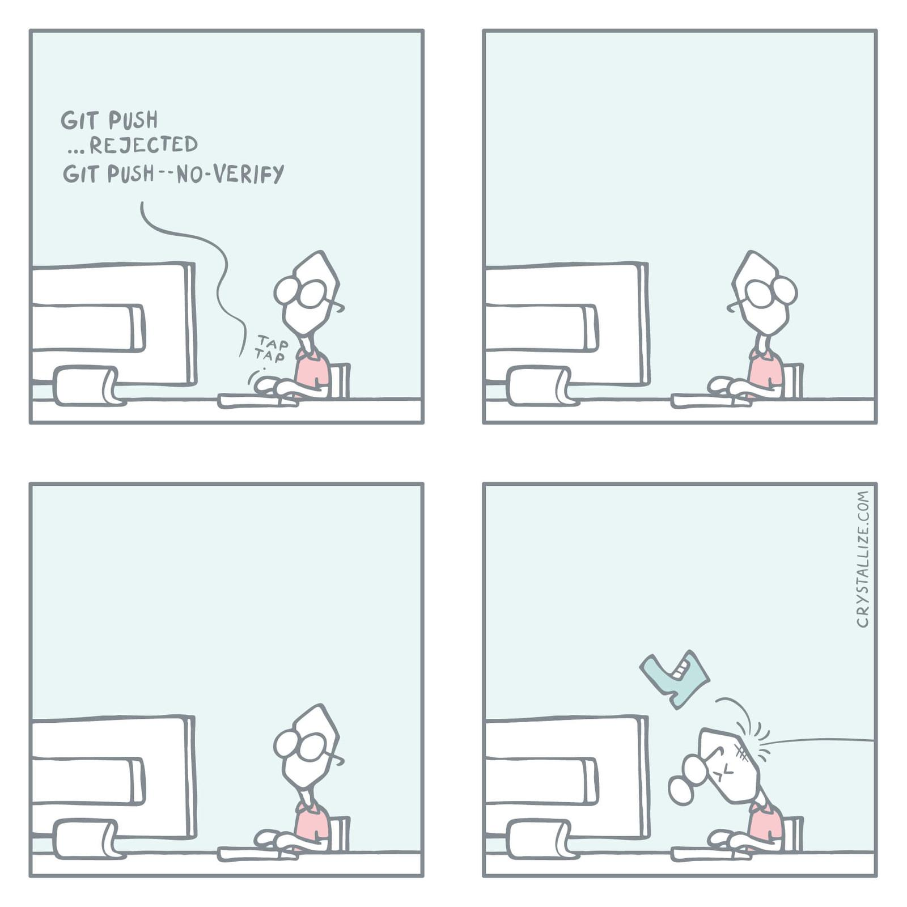

Collaborating through Git & GitHub
Using Internet hosting services such as GitHub, Git is a powerful collaboration tool.
In this workshop, we will cover the three classic collaboration situations and see how a collaborative workflow works.
Three situations
When you collaborate on a project through Git and a remote such as GitHub, there are three situations:
- you create a project on your machine and want others to contribute to it (1),
- you want to contribute to a project started by others and
(1) You start the project
In this first situation, you are the author of a project (you have a project under version control on your own machine) and you want to initiate a collaboration with others on it using GitHub as a remote.
Create a remote on GitHub
You need to create a remote on GitHub.
Create a free GitHub account
If you don’t already have one, sign up for a free GitHub account.
To avoid having to type your password all the time, you should set up SSH for your account.
Create an empty repository on GitHub
- Go to the GitHub website, login, and go to your home page.
- Look for the
Repositoriestab & click the greenNewbutton. - Enter the name you want for your repo, without spaces.
- Make the repository public or private.
Link empty repository to your repo
Click on the Code green drop-down button, select SSH if you have set SSH for your GitHub account or HTTPS and copy the address.
In the command line, cd inside your project, and add the remote:
git remote add <remote-name> <remote-address>remote-name is a convenience name to identify that remote. You can choose any name, but since Git automatically call the remote origin when you clone a repo, it is common practice to use origin as the name for the first remote.
Example (using an SSH address):
git remote add origin git@github.com:<user>/<repo>.gitExample (using an HTTPS address):
git remote add origin https://github.com/<user>/<repo>.gitIf you don’t want to grant others write access to the project, and you only accept contributions through pull requests, you are set.
If you want to grant your collaborators write access to the project however, you need to add them to it.
Invite collaborators
- Go to your GitHub project page.
- Click on the
Settingstab. - Click on the
Manage accesssection on the left-hand side (you will be prompted for your GitHub password). - Click on the
Invite a collaboratorgreen button. - Invite your collaborators with one of their GitHub user name, their email address, or their full name.
(2) Write access to project
In this second situation, someone else started a project and they are inviting you to collaborate to it, giving you write access to the project.
In this case, you need to clone the project: cd to the location where you want your local copy, then:
git clone <remote-address> <local-name>This sets the project as a remote to your new local copy and that remote is automatically called origin.
Without <local-name>, the repo will have the name of the last part of the remote address.
(3) No write access to project
In this third situation, someone else started a project and you want to collaborate to it, but you do not have write access to it.
In this case, you will have to submit pull requests.
Here is the workflow for a pull request (PR):
- Fork the project on GitHub.
- Clone your fork on your machine.
- Add the initial project as a second remote & call it
upstream. - Pull from
upstreamto update your local project. - Create & checkout a new branch.
- Make & commit your changes on that branch.
- Push that branch to your fork (i.e.
origin— remember that you do not have write access toupstream). - Go to the original project GitHub’s page & open a pull request.
Collaborative workflow
Pulling and pushing
When you collaborate with others using GitHub (or other remote), you and others will work simultaneously on some project. How does this work?
To upload your changes to the remote on GitHub you push to it with git push.
If one of your collaborators has made changes to the remote (pushing from their own local version of the project), you won’t be able to push. Instead, you will get the following message:
To xxx.git
! [rejected] main -> main (fetch first)
error: failed to push some refs to 'xxx.git'
hint: Updates were rejected because the remote contains work that you do
hint: not have locally. This is usually caused by another repository pushing
hint: to the same ref. You may want to first integrate the remote changes
hint: (e.g., 'git pull ...') before pushing again.
hint: See the 'Note about fast-forwards' in 'git push --help' for details.The solution?
You first have to download (git pull) their work onto your machine, merge it with yours (which will happen automatically if there are no conflicts), before you can push your work to GitHub.
Now… what if there are conflicts?
Resolving conflicts

From crystallize.com
Git works line by line. As long as your collaborators and you aren’t working on the same line(s) of the same file(s) at the same time, there will not be any problem. If however you modified one or more of the same line(s) of the same file(s), Git will not be able to decide which version should be kept. When you git pull their work on your machine, the automatic merging will get interrupted and Git will ask you to resolve the conflict(s) before the merge can resume. It will conveniently tell you which file(s) contain the conflict(s).
There are fancy tools to resolve conflicts, but you can do it in any text editor: simply open the file(s) listed by Git as having conflicts and look for the following markers:
<<<<<<< HEAD
This is your version.
=======
This is the alternative version of the same section of the file.
>>>>>>> alternative versionThese markers are added by Git to signal the areas of conflict. It is up to you to choose between the two versions (or create a third one) and remove the conflict markers. After that, you can stage the file(s) which contained the conflicts to finish the merge (and then you can commit).